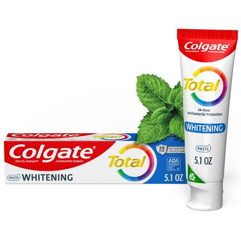

Colgate-Palmolive Experience
Starting in February 2024, my journey as a Security Engineer Intern at Colgate-Palmolive has been nothing short of transformative. This role has provided me with extensive hands-on experience in implementing cutting-edge security solutions and working with a diverse range of technologies and platforms.
Privileged Access Management (PAM) Solutions
.png)
One of the significant projects I undertook was the implementation of advanced Privileged Access Management (PAM) solutions using Okta, Tanium Automate, and Centrify. This project was crucial in bolstering the security posture of the organization. By integrating these PAM solutions, we achieved a 40% reduction in data breaches. The primary goal was to safeguard sensitive information and ensure that privileged accounts were managed effectively. This involved setting up secure authentication mechanisms, automating routine tasks to minimize human error, and continuously monitoring access to critical systems.
Splunk for Log Analysis
Another critical aspect of my role was utilizing Splunk for seamless log analysis across multiple systems. Splunk's powerful data aggregation and analysis capabilities allowed us to enhance our security monitoring significantly. We could proactively detect and respond to threats by analyzing logs in real-time. This proactive threat detection was a game-changer in improving our incident response times and ensuring that potential security issues were addressed before they could escalate.
Migration of IT Profiles
s.jpeg)
One of the more complex tasks I handled was migrating over 1000 IT profiles to a new platform using PowerShell and the Colgate-Palmolive API. This project required meticulous planning and execution to ensure a smooth transition without disrupting daily operations. Additionally, I crafted a comprehensive Standard Operating Procedure (SOP) Manual for these 1000+ employees. The SOP manual played a crucial role in streamlining the adoption process, providing clear instructions and guidelines, and ensuring that all employees could seamlessly integrate into the new system.
Conclusion
Overall, my experience at Colgate-Palmolive has been immensely rewarding. The projects I've worked on have not only enhanced my technical skills but also provided me with valuable insights into the importance of robust security measures in a large organization. The hands-on experience with advanced security solutions, log analysis, and large-scale migrations has prepared me to tackle complex security challenges in the future.